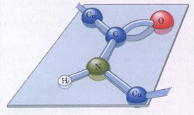
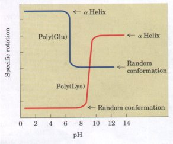
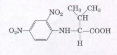
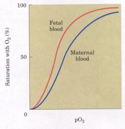

Every protein has a unique three-dimensional structure that reflects its function, a structure stabilized by multiple weak interactions. Hydrophobic interactions provide the major contribution to stabilizing the globular form of most soluble proteins; hydrogen bonds and ionic interactions are optimized in the specific structure that is thermodynamically most stable.
There are four generally recognized levels of protein structure. Primary structure refers to the amino acid sequence and the location of disulfide bonds. Secondary structure refers to the spatial relationship of adjacent amino acids. Tertiary structure is the three-dimensional conformation of an entire polypeptide chain. Quaternary structure involves the spatial relationship of multiple polypeptide chains (e.g., enzyme subunits) that are tightly associated.
The nature of the bonds in the polypeptide chain places constraints on structure. The peptide bond is characterized by a partial double-bond character that keeps the entire amide group in a rigid planar configuration. The N-Cα and Cα-C bonds can rotate with bond angles φ and ψ, respectively. Secondary structure can be defmed completely by these two bond angles.
There are two general classes of proteins: fibrous and globular. Fibrous proteins, which serve mainly structural roles, have simple repeating structures and provided excellent models for the early studies of protein structure. Two major types of secondary structure were predicted by model building based on information obtained from fibrous proteins: the α helix and the β conformation. Both are characterized by optimal hydrogen bonding between amide nitrogens and carbonyl oxygens in the peptide backbone. The stability of these structures within a protein is influenced by their amino acid content and by the relative placement of amino acids in the sequence. Another nonrepeating type of secondary structure common in proteins is the β bend.
In fibrous proteins such as keratin and collagen, a single type of secondary structure predominates. The polypeptide chains are supertwisted into ropes and then combined in larger bundles to provide strength. The structure of elastin permits stretching.
Globular proteins have more complicated tertiary structures, often containing several types of secondary structure in the same polypeptide chain. The first globular protein structure to be determined, using x-ray diffraction methods, was that of myoglobin. This structure confirmed that a predicted secondary structure (α helix) occurs in proteins; that hydrophobic amino acids are located in the protein interior; and that globular proteins are compact. Subsequent research on protein structure has reinforced these conclusions while demonstrating that different proteins often differ in tertiary structure.
The three-dimensional structure of proteins can be destroyed by treatments that disrupt weak interactions, a process called denaturation. Denaturation destroys protein function, demonstrating a relationship between structure and function. Some denatured proteins (e.g., ribonuclease) can renature spontaneously to give active protein, showing that the tertiary structure of a protein is determined by its amino acid sequence.
The folding of globular proteins is believed to begin with local formation of regions of secondary structure, followed by interactions of these regions and adjustments to reach the final tertiary structure. Sometimes regions of a polypeptide chain, called domains, fold up separately and can have separate functions. The final structure and the steps taken to reach it are influenced by the need to bury hydrophobic amino acid side chains in the protein interior away from water, the tendency of a polypeptide chain to twist in a right-handed sense, and the need to maximize hydrogen bonds and ionic interactions. These constraints give rise to structural patterns such as the β-α-β fold and twisted β pleated sheets. Even at the level of tertiary structure, some common patterns are found in proteins that have no known functional relationship.
Quaternary structure refers to the interaction between the subunits of oligomeric proteins or large protein assemblies. The best-studied oligomeric protein is hemoglobin. The four subunits of hemoglobin exhibit cooperative interactions on oxygen binding. Binding of oxygen to one subunit facilitates oxygen binding to the next, giving rise to a sigmoid binding curve. These effects are mediated by subunit-subunit interactions and subunit conformational changes. Very large protein structures consisting of many copies of one or a few dif ferent proteins are referred to as supramolecular complexes. These are found in cellular skeletal structures, muscle and other types of cellular "engines," and virus coats.
Anfinsen, C.B. (1973) Principles that govern the folding of protein chains. Science 181, 223-230. The author reuiews his classic work on ribonuclease.
Cantor, C.R. & Schimmel, P.R. (1980) Biophysical Chemistry, Part I: The Conformation of Biological Macromolecules, W.H. Freeman and Company, New York.
Evolution of Catalytic Function. (1987) Cold Spring Harb. Symp. Quant. Biol. 52.
A source of excellent articles on many topics, including protein structure, folding, and funetion.
Creighton, T.E. (1984) Proteins: Structures and Molecular Properties, W.H. Freeman and Company, New York.
Oxender, D.L. (ed) (1987) Protein Structure, Folding, and Design 2, UCLA Symposia on Molecular and Cellular Biology, New Series, Vol. 69, Alan R. Liss, Inc., New York.
Summary papers from a major symposium on the title subject.
Structure and Function of Proteins. (1989) Trends Biochem. Sci. 14 (July).
A special issue deuoted to reuiews on protein chemistry and protein structure. Includes good summaries of protein folding, protein structure prediction, and many other topics.
Dickerson, R.E. & Geis, I. (1982) Hemoglobin: Structure, Function, Euolution, and Pathology, The Benjamin/Cummings Publishing Company, Menlo Park, CA.
Ingram, V.M. (1957) Gene mutations in human haemoglobin: the chemical difference between normal and sickle cell haemoglobin. Nature 180, 326328.
Discouery of the amino acid replacemerzt in sicklecell hemoglobin (hemoglobin S).
Kendrew, J.C. (1961) The three-dimensional structure of a protein molecule. Sci. Am. 205 (December), 96-111.
Describes how the structure of' myoglobin was determined and what was learned from it.
Kim, P.S. & Baldwin, R.L. (1990) Intermediates in the folding reactions of small proteins. Annu. Reu. Biochem. 59, 631-660.
Koshland, D.E., Jr. (1973) Protein shape and biological control. Sci. Am. 229 (October), 52-64.
A discussion of the importance of fZexibility in protein structures.
McPherson, A. (1989) Macromolecular crystals, Sci. Am., 260 (March>, 62-69.
Describes how macromolecules such as proteins are crystallized.
Pace, C.N. (1990) Conformational stability of globular proteins. Trends Biochem. Sci. 15, 14-17.
Perutz, M.F. (1978) Hemoglobin structure and respiratory transport. Sci. Am. 239 (December), 92125.
Richards, F.M. (1991) The protein folding problem. Sci. Am. 264 (January>, 54-63.
Richardson, J.S. (1981) The anatomy and taxonomy of protein structure. Adu. Prot. Chem. 34, 167339.
An outstanding summary of protein structural patterns and principles; the a.uthor originated the uerv useful "ribbon" representatiorzs of protein structure that are used in many places in thi.s chapter.
Rothman, J.E. (1989) Polypeptide chain binding proteins: catalysts of protein folding and related processes in cells. Cell 59, 591-601.
Shortle, D. (1989) Probing the determinants of protein folding and stability with amino acid substitutions. J. Biol. Clzern. 264, 5315-5318.

1. Properties of the Peptide Bond In x-ray studies of crystalline peptides Linus Pauling and Robert Corey found that the C-N bond in the peptide link is intermediate in length (0.132 nm) between a typical C-N single bond (0.149 nm) and a C=N double bond (0.127 nm). They also found that the peptide bond is planar (all four atoms attached to the C-N group are located in the same plane) and that the two a-carbon atoms attached to the C-N are always trans to each other (on opposite sides of the peptide bond):(a) What does the length of the C-N bond in the peptide linkage indicate about its strength and its bond order, i.e., whether it is single, double, or triple?
(b) In light of your answer to part (a), provide an explanation for the observation that such a C-N bond is intermediate in length between a double and single bond.
(c) What do the observations of Pauling and Corey tell us about the ease of rotation about the C-N peptide bond?
2. Early Obseruations on the Structure of Wool William Astbury discovered that the x-ray pattern of wool shows a repeating structural unit spaced about 0.54 nm along the direction of the wool fiber. When he steamed and stretched the wool, the x-ray pattern showed a new repeating structural unit at a spacing of 0.70 nm. Steaming and stretching the wool and then letting it shrink gave an x-ray pattern consistent with the original spacing of about 0.54 nm. Although these observations provided important clues to the molecular structure of wool, Astbury was unable to interpret them at the time. Given our current understanding of the structure of wool, interpret Astbury's observations.
3. Rate of Synthesis of Hair α-Keratin In human dimensions, the growth of hair is a relatively slow process, occurring at a rate of 15 to 20 cm/yr. All this growth is concentrated at the base of the hair fiber, where α-keratin filaments are synthesized inside living epidermal cells and assembled into ropelike structures (see Fig. 7-13). The fundamental structural element of α-keratin is the α helix, which has 3.6 amino acid residues per turn and a rise of 0.56 nm per turn (see Fig. 7-6). Assuming that the biosynthesis of α-helical keratin chains is the rate-limiting factor in the growth of hair, calculate the rate at which peptide bonds of α-keratin chains must be synthesized (peptide bonds per second) to account for the observed yearly growth of hair.
| 4. The Effect of pH on the Conformations
of Polyglutamate and Polylysine The unfolding of the a
helix of a polypeptide to a randomly coiled conformation
is accompanied by a large decrease in a property called
its specific rotation, a measure of a solution's capacity
to rotate plane-polarized light. Polyglutamate, a
polypeptide made up of only L-Glu residues, has the
α-helical conformation at pH 3. However, when the pH is
raised to 7, there is a large decrease in the specific
rotation of the solution. Similarly, polylysine (L-Lys
residuesl is an α helix at pH 10, but when the pH is
lowered to 7, the specific rotation also decreases, as
shown by the following graph. What is the explanation for the effect of the pH changes on the conformations of poly(Glu) and poly(Lys)? Why does the transition occur over such a narrow range of pH? |
 |
5. The Disulfide-Bond Content Determines the Mechanical Properties of Many Proteins A number of natural proteins are very rich in disulfide bonds, and their mechanical properties (tensile strength, viscosity, hardness, etc.) are correlated with the degree of disulfide bonding. For example, glutenin, a wheat protein rich in disulfide bonds, is responsible for the cohesive and elastic character of dough made from wheat flour. Similarly, the hard, tough nature of tortoise shell is due to the extensive disulfide bonding in its a-keratin. What is the molecular basis for the correlation between disulfide-bond content and mechanical properties of the protein?
6. Why Does Wool Shrink? When wool sweaters or socks are washed in hot water and/or dried in an electric dryer, they shrink. From what you know of a-keratin structure, how can you account for this? Silk, on the other hand, does not shrink under the same conditions. Explain.
7. Heat Stability of Proteins Containing Disulfide Bonds Most globular proteins are denatured and lose their activity when briefly heated to 65 °C. Globular proteins that contain multiple disulfide bonds often must be heated longer at higher temperatures to denature them. One such protein is bovine pancreatic trypsin inhibitor (BPTI), which has 58 amino acid residues in a single chain and contains three disulfide bonds. On cooling a solution of denatured BPTI, the activity of the protein is restored. Can you suggest a molecular basis for this property?
8. Bacteriorhodopsin in Purple Membrane Proteins Under the proper environmental conditions, the salt-loving bacterium Halobacterium halobium synthesizes a membrane protein (Mr 26,000) known as bacteriorhodopsin, which is purple because it contains retinal. Molecules of this protein aggregate into "purple patches" in the cell membrane. Bacteriorhodopsin acts as a light-activated proton pump that provides energy for cell functions. X-ray analysis of this protein reveals that it consists of seven parallel α-helical segments, each of which traverses the bacterial cell membrane (thickness 4.5 nm). Calculate the minimum number of amino acids necessary for one segment of a helix to traverse the membrane completely. Estimate the fraction of the bacteriorhodopsin protein that occurs in α-helical form. Justify all your assumptions. (Use an average amino acid residue weight of 110.)
9. Biosynthesis of Collagen Collagen, the most abundant protein in mammals, has an unusual amino acid composition. Unlike most other proteins, collagen is very rich in proline and hydroxyproline (see p. 172). Hydroxyproline is not one of the 20 standard amino acids, and its incorporation
in collagen could occur by one of two routes: (1) proline is hydroxylated by enzymes before incorporation into collagen or (2) a Pro residue is hydroxylated after incorporation into collagen. To differentiate between these two possibilities, the following experiments were performed. When [14C]proline was administered to a rat and the collagen from the tail isolated, the newly synthesized tail collagen was found to be radioactive. If however,[l4C]Chydroxyproline was administered to a rat, no radioactivity was observed in the newly synthesized collagen. How do these experiments differentiate between the two possible mechanisms for introducing hydroxyproline into collagen?
10. Pathogenic Action of Bacteria That Cause Gas Gangrene The highly pathogenic anaerobic bacterium Clostridium perfringens is responsible for gas gangrene, a condition in which animal tissue structure is destroyed. This bacterium secretes an enzyme that efficiently catalyzes the hydrolysis of the peptide bond indicated in red in the sequence:
| -X-Gly-Pro-Y- | H2O
| -X-COO- + H3N+ -Gly-Pro-Y |
where X and Y are any of the 20 standard amino acids. How does the secretion of this enzyme contribute to the invasiveness of this bacterium in human tissues? Why does this enzyme not affect the bacterium itself?
11. Formation of Bends and Intrachain CrossLinkages in Polypeptide Chains In the following polypeptide, where might bends or ttlrns occur? Where might intrachain disulfide cross-linkages be formed?
| 1 | 2 | 3 | 4 | 5 | 6 | 7 | 8 | 9 | 10 | 11 | 12 | 13 | 14 | 15 | 16 |
Ile- |
Ala - |
His - |
Thr- |
Tyr- |
Gly - |
Pro- |
Phe- |
Glu- |
Ala- |
Ala- |
Met- |
Cys- |
Lys- |
Trp- |
Glu- |
| 17 | 18 | 19 | 20 | 21 | 22 | 23 | 24 | 25 | 26 | 27 | 28 | ||||
| Ala- | Gln- | Pro- | Asp- | Gly- | Met- | Glu- | Cys- | Ala- | Phe- | His- | Arg- |
12. Loccztion of Specific Amino Acids in Globular Proteins X-ray analysis of the tertiary structure of myoglobin and other small, single-chain globular proteins has led to some generalizations about how the polypeptide chains of soluble proteins fold. With these generalizations in mind, indicate the probable location, whether in the interior or on the external surface, of the following amino acid residues in native globular proteins: Asp, Leu, Ser, Val, Gln, Lys. Explain your reasoning.
13. The Number of Polypeptide Chains in an Oligomeric Protein A sample (660 mg) of an oligomeric protein of Mr 132,000 was treated with an excess of 1-fluoro-2,4-dinitrobenzene under slightly alkaline conditions until the chemical reaction was complete. The peptide bonds of the protein were then completely hydrolyzed by heating it with concentrated HCI. The hydrolysate was found to contain 5.5 mg of the following compound:

However, 2,4-dinitrophenyl derivatives of the α-amino groups of other amino acids could not be found.
(a) Explain why this information can be used to determine the number of polypeptide chains in an oligomeric protein.
(b) Calculate the number of polypeptide chains in this protein.
14. Molecular Weight of Hemoglobin The first indication that proteins have molecular weights greatly exceeding those of the (then known) organic compounds was obtained over 100 years ago. For example, it was known at that time that hemoglobin contains 0.34% by weight of iron.
(a) From this information determine the minimum molecular weight of hemoglobin.
(b) Subsequent experiments indicated that the true molecular weight of hemoglobin is 64,500. What information did this provide about the number of iron atoms in hemoglobin?
15. Comparison of Fetal and Maternal
Hemoglobin Studies of oxygen transport in pregnant
mammals have shown that the O2-saturation curves of fetal
and maternal blood are markedly different when measured
under the same conditions. Fetal erythrocytes contain a
structural variant of hemoglobin, hemoglobin F,
consisting of two α and two γ subunits (α2γ2
), whereas
maternal erythrocytes contain the usual hemoglobin A
(α2β2).
|
 |